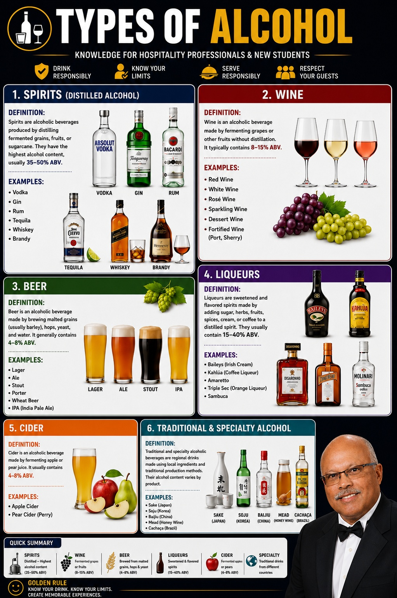

The Complete Hospitality Professional's Guide

Understanding alcoholic beverages is one of the most important skills for hospitality professionals. Whether you work in a hotel, resort, cruise ship, restaurant, cocktail bar or fine dining establishment, guests expect knowledgeable recommendations and confident service. Knowing the differences between beer, wine, spirits and liqueurs improves guest confidence, increases sales and enhances the overall dining experience.
This guide has been developed for hospitality professionals, bartenders, restaurant supervisors, hotel managers and hospitality students who want practical knowledge rather than complicated theory. Throughout my hospitality career I have worked with thousands of food and beverage professionals. The best performers always shared one characteristic—they understood not only what they were serving but why guests preferred certain drinks, serving methods and food pairings.
"A knowledgeable bartender sells confidence as much as the drink."
— Nigel A. Thomas
Alcohol is produced when yeast converts natural sugars into ethanol through fermentation. Some beverages are consumed after fermentation, while others undergo distillation to increase alcohol concentration and create stronger spirits.
| Fermented Drinks | Distilled Drinks |
|---|---|
| Beer | Whisky |
| Wine | Vodka |
| Cider | Gin |
| Mead | Rum |
| Sake | Tequila |
| Perry | Brandy |
Fermented beverages usually contain between 4% and 15% alcohol. Distilled spirits normally range between 35% and 50% alcohol by volume. Knowing this helps staff recommend suitable drinks to guests.
Beer is the world's oldest and most widely consumed alcoholic beverage. It is produced from malted barley, hops, yeast and water through fermentation. Beer styles vary widely depending on ingredients, brewing methods and regional traditions.
| Popular Beer Styles | Characteristics |
|---|---|
| Lager | Light, crisp and refreshing |
| Pilsner | Golden with noticeable hop bitterness |
| Ale | Fruit-forward with richer flavour |
| Stout | Dark roasted malt flavours |
| Porter | Chocolate and coffee notes |
| Wheat Beer | Soft fruity aroma with cloudy appearance |
Wine is produced by fermenting grapes and is one of the oldest alcoholic beverages in the world. It plays an important role in hotels, restaurants, banquets and fine dining operations. A sound understanding of wine enables hospitality professionals to recommend appropriate selections, enhance guest satisfaction and increase beverage sales.
The character of a wine is influenced by the grape variety, climate, soil, ageing process and winemaking techniques. Every bottle tells the story of where it was produced and how it was crafted.
| Wine Type | Description |
|---|---|
| Red Wine | Produced using dark-skinned grapes with skins left during fermentation. |
| White Wine | Made from white grapes or red grapes with skins removed. |
| Rosé Wine | Produced by allowing limited contact between grape skins and juice. |
| Dessert Wine | Sweet wines served after meals with desserts. |
Red wines generally contain deeper flavours and pair exceptionally well with grilled meats, lamb, steaks, rich pasta dishes and mature cheeses. Popular red grape varieties include Cabernet Sauvignon, Merlot, Shiraz, Pinot Noir, Malbec and Sangiovese.
Serve most red wines between 15°C and 18°C. Serving them too warm can overpower the flavour, while serving them too cold suppresses their aroma.
White wines are lighter and fresher than reds. They pair beautifully with seafood, shellfish, poultry, creamy pasta dishes and salads. Popular varieties include Chardonnay, Sauvignon Blanc, Riesling, Pinot Grigio and Chenin Blanc.
Rosé wines combine the freshness of white wine with some of the fruit characteristics of red wine. They are popular during warm weather and pair well with Mediterranean cuisine, light appetisers and grilled seafood.
Sparkling wines contain natural carbon dioxide that creates bubbles. They are commonly served during celebrations, weddings, corporate events and special occasions.
| Sparkling Wine | Country |
|---|---|
| Champagne | France |
| Prosecco | Italy |
| Cava | Spain |
| Sparkling Shiraz | Australia |
True Champagne is produced only in the Champagne region of France using strict production methods. Although many sparkling wines exist worldwide, only those originating from this region may legally use the name Champagne. Hotels frequently serve Champagne during weddings, anniversaries, executive functions and VIP celebrations.
Not every sparkling wine is Champagne, but every Champagne is a sparkling wine.
Fortified wines are produced by adding grape spirit during or after fermentation, increasing their alcohol content and improving shelf life. These beverages are commonly served as aperitifs or dessert wines.
| Fortified Wine | Typical Service |
|---|---|
| Port | After dinner |
| Sherry | Before or after meals |
| Madeira | Desserts and cooking |
| Marsala | Cooking and desserts |
| Wine Style | Recommended Temperature |
|---|---|
| Sparkling Wine | 6–8°C |
| Light White Wine | 7–10°C |
| Full-bodied White Wine | 10–12°C |
| Rosé | 8–10°C |
| Light Red Wine | 13–15°C |
| Full-bodied Red Wine | 16–18°C |
Professional beverage service requires selecting the correct glassware. The shape of the glass influences aroma, flavour perception and the guest's overall experience.
Guests remember confidence more than technical terminology. A server who understands the menu, recommends an appropriate wine and explains it simply creates a far better dining experience than someone who recites memorised wine vocabulary. Professional hospitality is about knowledge, confidence and genuine guest care.
Whisky is one of the world's most respected spirits and is produced by distilling fermented grain mash before ageing it in wooden barrels. Depending on the country of origin and production method, whisky develops unique flavours ranging from light floral notes to rich smoky aromas.
| Type | Main Characteristics |
|---|---|
| Scotch Whisky | Produced in Scotland, often smoky and complex. |
| Irish Whiskey | Smooth and triple distilled. |
| Bourbon | American whisky made primarily from corn. |
| Canadian Whisky | Light-bodied and smooth. |
| Japanese Whisky | Elegant with refined fruit and floral notes. |
Vodka is a neutral spirit traditionally produced from grains or potatoes. Its clean flavour makes it one of the most versatile spirits for cocktails.
Gin is distilled with juniper berries and a variety of botanicals such as coriander, citrus peel and angelica root. It is renowned for its aromatic profile.
Classic gin cocktails include:
Rum is produced from sugarcane juice or molasses. It ranges from light white rum to rich dark and spiced varieties.
| Rum Style | Typical Use |
|---|---|
| White Rum | Cocktails |
| Gold Rum | Mixed drinks |
| Dark Rum | Premium sipping and desserts |
| Spiced Rum | Cocktails |
Tequila is produced from Blue Weber Agave in Mexico. Hospitality professionals should recognise the major classifications.
Brandy is distilled from wine or fermented fruit. Cognac is a premium brandy produced only in the Cognac region of France under strict production regulations.
Every Cognac is a Brandy. Not every Brandy is Cognac.
Liqueurs are sweetened spirits flavoured with herbs, spices, fruits, coffee, cream or nuts. They are widely used after meals and in cocktails.
| Liqueur | Primary Flavour |
|---|---|
| Baileys | Irish Cream |
| Kahlúa | Coffee |
| Grand Marnier | Orange |
| Amaretto | Almond |
| Sambuca | Anise |
| Cointreau | Orange |
An aperitif is served before a meal to stimulate the appetite. A digestif is served after a meal to aid relaxation and complete the dining experience.
| Aperitifs | Digestifs |
|---|---|
| Dry Vermouth | Brandy |
| Campari | Cognac |
| Aperol | Baileys |
| Lillet | Amaretto |
Professional bartenders should master the basic cocktail preparation methods.
Hospitality professionals have a duty to serve alcohol responsibly. Always verify legal drinking age requirements, recognise signs of intoxication and politely refuse service when necessary. Guest safety should always take priority over sales.
A great bartender is remembered not only for preparing excellent drinks but also for exercising sound judgement and protecting both guests and the reputation of the establishment.
| Beverage | Recommended Pairing |
|---|---|
| Lager | Pizza, burgers, seafood |
| Cabernet Sauvignon | Steak and lamb |
| Chardonnay | Chicken and creamy pasta |
| Whisky | Smoked meats and aged cheese |
| Port | Desserts and blue cheese |
Most standard spirits contain 40–50% ABV, while specialty spirits may be stronger.
No. Champagne is produced only in the Champagne region of France.
Spirits are distilled alcoholic beverages. Liqueurs are distilled spirits sweetened and flavoured with ingredients such as herbs, fruits, coffee or cream.
Nigel A. Thomas is a hospitality executive with over three decades of international experience in hotels, resorts, cruise lines, restaurants and hospitality training. Through NigelThomas.live he shares practical, experience-based resources that help hospitality professionals strengthen their operational knowledge, leadership skills and career prospects.
Understanding alcoholic beverages is about much more than memorising names. Hospitality professionals who understand product knowledge, service standards, responsible alcohol service and food pairing deliver better guest experiences and build stronger careers. Whether you are preparing for an interview, managing a restaurant, supervising a hotel bar or training new staff, continuous learning remains one of the greatest investments you can make in your hospitality career.